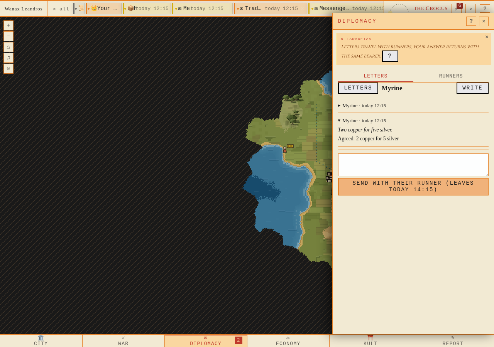
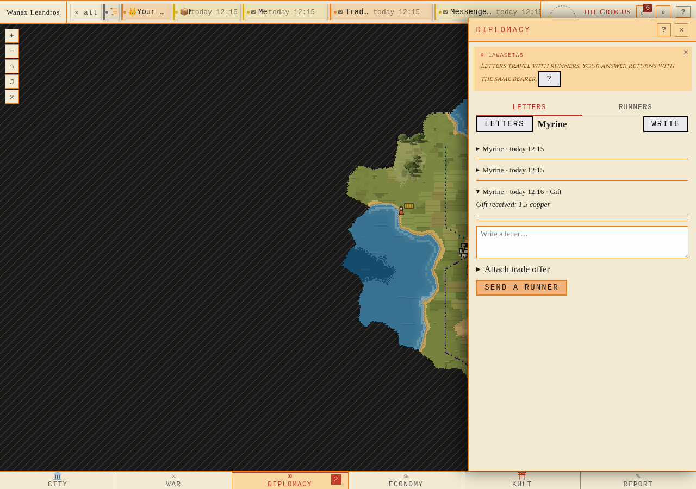
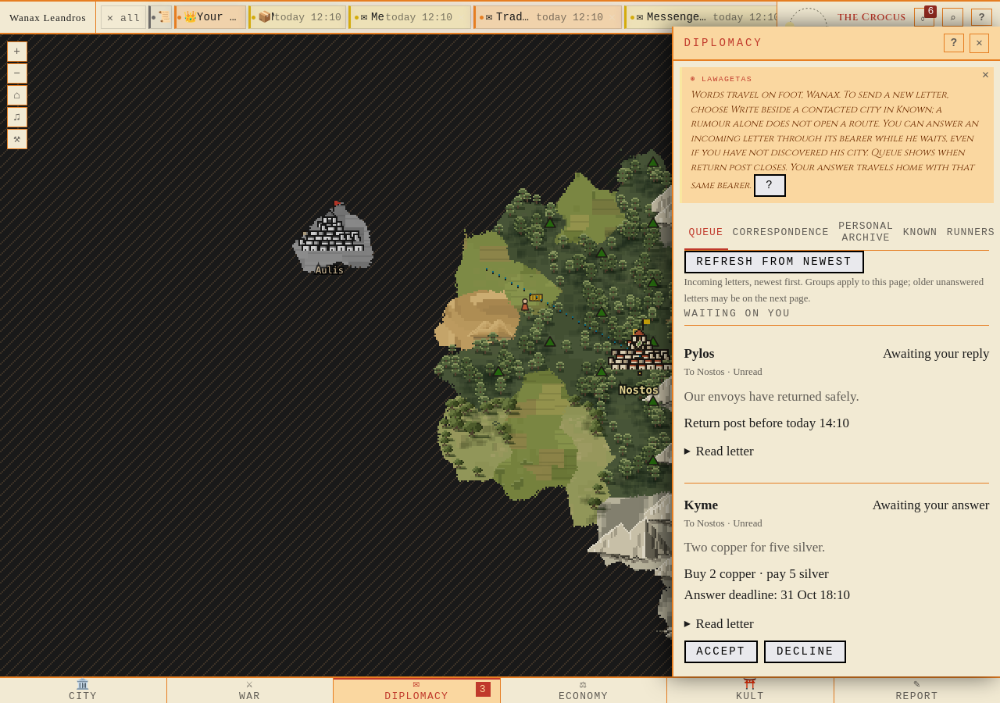
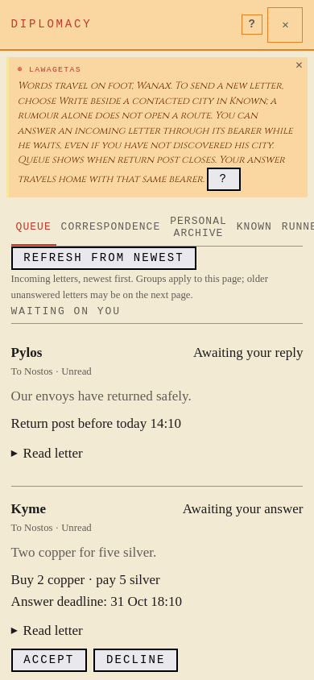

Two tabs, one row per Wanax, the exchange and its next action. Runtime code 09fb66dd. Images use native Firefox at1280 or390px, without CSS overrides. Proof · Run2 raw evidence · Source verification.
Both final independent loops: PASS,0pageerrors. Actual process provenance: c5e08ef+brevladan / migration210. All296runtimefiles captured before build match committed09fb66dd; this source label is retained truthfully.
C1 · Accepted offer remains in the exchange · run2 · c5e08ef+brevladan /210

C2 · Recorded gift outcome, person name and exact goods; origin hidden
C2 · Recorded gift outcome, person name and exact goods; origin hidden · run2 · c5e08ef+brevladan /210

Before
Independent baseline process c5e08eff /209, the old five-tab surface. These images show the original Queue and overlapping navigation.
D1 · Before, desktop
D1 · baseline · c5e08eff /209

D2 · Before, mobile
D2 · baseline · c5e08eff /209

Run1 independently repeats the same scenario: raw proof, image register. C2 uses a labelled recorded gift outcome fixture; it proves rendering and origin privacy, not an actual gift voyage. All early harness attempts and their corrections are explained in the proof.